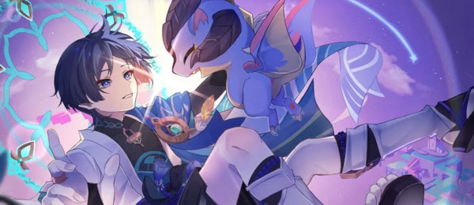

Primeira Aparição no Jogo
A primeira vez que ele aparece na história é na atualização Versão 1.1, no evento limitado Unreconciled Stars, onde o jogador o encontra como um personagem estranho que se apresenta como um “vagabundo de Inazuma”. Ele inicialmente conversa normalmente, mas rapidamente tenta atacar o Viajante ao descobrir que ele é o Cavaleiro Honorário, sendo impedido por Mona. Nesse evento, ele faz uma afirmação marcante de que o céu e as estrelas são uma mentira, levantando mistério sobre sua motivação. Essa introdução acontece antes de qualquer participação dele no enredo principal de Inazuma ou em outros Arcontes.
.jpg)
Surge um Novo Aliado
Após ser derrotado pelo Viajante e por Nahida enquanto tentava se tornar um deus em Sumeru, Scaramouche fica sem aliados e sem rumo, percebendo que seus planos egoístas o deixaram isolado. Ele então aceita cooperar com Nahida para investigar o Irminsul e, nessa jornada, descobre a verdade sobre as três traições que marcaram sua vida, entendendo que muito do que o amargurou foi manipulado por Il Dottore. Ao ver que apagar seu passado dos registros do Irminsul não mudaria os eventos trágicos que ocorreram, ele abandona sua antiga identidade de Scaramouche. Reencontrar o Viajante em Sumeru (o único que ainda se lembrava dele após a redefinição) e ouvir sua explicação o ajuda a aceitar seu novo caminho. Assim, ele toma o nome de Wanderer, decide ajudar o Viajante quando possível e busca um novo propósito longe da hostilidade do passado.

Depois de sua renascença como Wanderer (depois de apagar sua existência de Irminsul), seu visual muda drasticamente: ele agora veste tons de azul-claro e branco, com acessórios fluidos e um grande chapéu decorado com um lírio-d’água ( símbolo de pureza, renascimento e iluminação), contrastando com as cores e estilo mais sombrios de Scaramouche.
A paleta suave e os detalhes anemo refletem sua nova ligação com o vento e sua liberdade recém-conquistada, deixando para trás a rigidez e controle que marcaram sua vida anterior.
.jpg)
Após os eventos de Summertide Scales and Tales (onde ele encontra Durin em Simulanka), o Wanderer evolui de um ser frio, cínico e se afastando de todos para alguém que reconhece valor nas conexões humanas e no cuidado pelo outro, algo que ele antes relutava ao extremo por medo e trauma do passado.
A amizade com Durin reflete essa mudança: ele vê no jovem dragão espelhos de si mesmo, ambos marcados por abandono e desejos de pertencer e escolhe entender e proteger Durin, ainda que reclame ou disfarce seus sentimentos.
Durin, por sua vez, vê além da fachada áspera do Wanderer e permanece ao seu lado, ensinando-o, com sua lealdade incondicional, a aceitar proximidade e amizade.
ssa relação simboliza o crescimento do Wanderer de um solitário endurecido a alguém capaz de empatia, reciprocidade e cura emocional, mesmo que continue mantendo um exterior reservado.